Archive
ArchiveBefore 2023 · published elsewhere
2022
-
Indiscreto
L’arte è di chi la esperisce
Marco Mattei recensisce ‘Strani Strumenti' di Alva Noë e prepara una teoria dell’arte reincantata.
-
Not
Crytpo-Arte Radicale?
Sul significato politico degli NFT nell’arte contemporanea: una prima mappatura.
-
Mirror
Architettura senza architetti
Secondo capitolo della ricerca sui network. In questo episodio, affrontiamo il pensiero dell’architetto Benjamin Constant e le sue conseguenze nell’epoca del metaverso.
-
Mirror
Breve viaggio alla scoperta dei network
Esplorazione del concetto di network e del protocollo crittografico del Web of Trust.
-
Indiscreto
Parliamo di Reincantamento
Dialoghiamo con Edoardo Camurri sull’idea di reincantamento, tra psichedelia, Dada e algoritmi.
-
Speculum!
ᗰᗩGIᑕ ᑎOTEᗷOKᔕ: un report
Dopo un anno di esperimenti con modelli text-to-image e immagini sintetiche, ci fermiamo per un punto sull’arte del prompt.
-
Speculum!
Alchimia e Farmacologia
Un dialogo tra Marco Mattei e Alessandro Longo. sull’idea di farmacologia positiva: è possibile una disciplina del reincantamento?
-
Mirror
Mechanism Art
Una ricerca per Curve Labs sui possibili nuovi spazi creativi, tra arti performative, economia e tecnologie decentralizzate.
-
Speculum!
Filosofia dal Futuro
Un manifesto di Marco Mattei su un approccio filosofico all’idea di futuro
2021
-
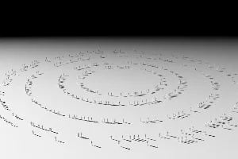
Speculum!
Radical Visions. Cities as lifeforms
Lorenzo Casavecchia, architect and REINCANTAMENTO collaborator, introduces his graduate project exploring the speculative future of architecture.
-
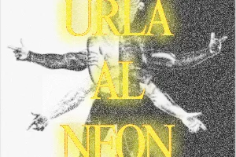
Speculum!
Neon Screams. History of the machines inside us
Trap, Drill, Dancehall. The future of music and the hybridisation of man and machine pass through these genres.
-
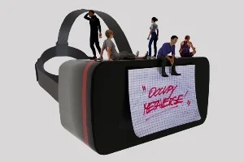
REINCANTAMENTO
Occupy Metaverse!
thoughts and questions in the first days of the post-Meta world. What lies in the future of social media?
-
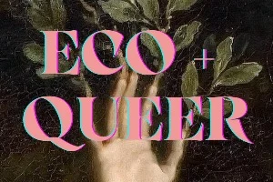
Speculum!
Eco+Queer
second podcast Ecologia Queer, Maschiocene, Ecofemminismo.
-
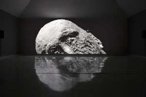
Speculum!
Faces under control. Proctoring software in university.
An analysis between politics and semiotics of proctoring sotware and their usage in European universities.
-
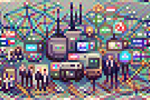
Singola
Back to the future: DAO’s and Web 3 dreams
we take a look at the DAOs word to understand how they can help in building a better internet
-
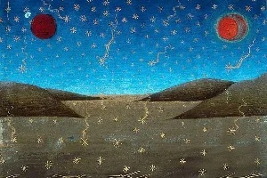
Speculum!
Conspiracy!
the first audio episode of our newsletter Speculum!, an oral article on conspiracies and the power of storytelling
-
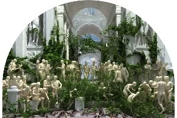
Speculum!
Magic and Autonomy
we return to Technic and Magic by Federico Campagna, for the release of the Italian translation
-
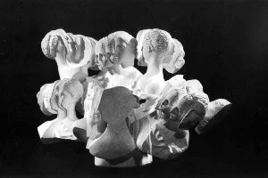
Medium
REINCANTAMENTO Episode 11. Towards impossible objects
the story of a crypto-editorial experiment bringing partecipation into philosophy
-
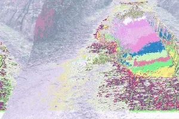
Lay0ut Magazine
Glitch #2: Ethics - Let’s talk about Glitch Feminism
second part of a short-series about glitch as a concept. we talk about the work of Legacy Russell and her glitch feminism
-
KABUL Magazine
Tech Collapse
will our technological infrastructure survive the climate collapse? which alternatives exist to survive?
-
Medium
REINCANTAMENTO Episode 10. NFT: beyond the hype, the ecosystem!
nft, pt.2 : internet money, cooperative guilds and green markets
-
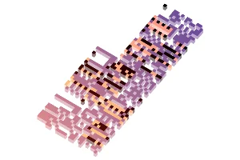
Lay0ut Magazine
Glitch #1: Metaphysics – Intentionality and machinic anxiety
first part of a short-series about glitch as a concept. from Deleuze to Pokémon, everything is glitch
-
KABUL Magazine
The NFT wave
a first exploration into the NFT realm as the world get to know these tokens
-
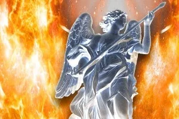
NOT
The madness of vision
drones and automatiche weapons analyzed through the eyes of Baroque
-
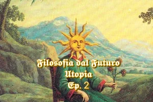
Speculum!
Utopia, Alchemy, Post-Scarcity
a journey through the relics of alchemy in search of speculative optimism
2020
-
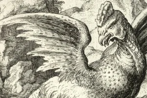
Medium
REINCANTAMENTO Episode 9. A Disproportionate Gaze
Human thought before AI, between myths, hopes and analysis
-
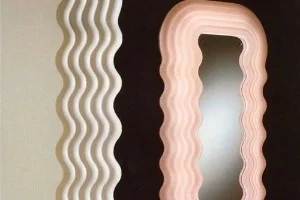
Menelique
The design of illusion
what is left of design in the age of algorithms? which alternative paths can be taken?
-
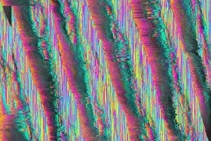
Medium
REINCANTAMENTO Episode 8. The psychedelic sun
can the glows of psychedelia change our perception of reality and guide us to re-enchantment?
-
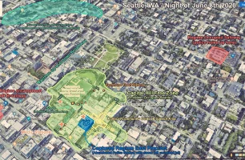
Medium
REINCANTAMENTO Episode 7. Destitute and Heal
the first of two texts dedicated to George Floyd's rebellion. we talk about Seattle’s CHAZ using two key concepts: destitution and care
-
Medium
REINCANTAMENTO Episode 6. Through the screen: cruelty in the age of the livestream
the first of two texts dedicated to George Floyd's rebellion. we investigate the link between the digital gaze and violence
-
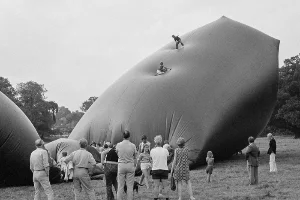
Medium
REINCANTAMENTO Episode 5. Re-enchanting design?
starting from the Amsterdam Design Manifesto, we explore the meaning of design today
-
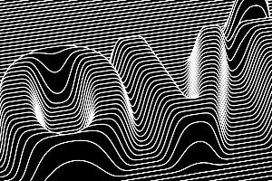
Medium
REINCANTAMENTO Episode 4. The algorithm’s destiny
how much are we shaped by our devices? we try to answer to this question using Bernard Stiegler’s thought
-
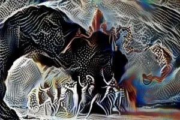
Medium
REINCANTAMENTO Episode 3. Stiegler’s farmacology
technic is not univocal: like Plato's pharmakov , it can be either poison or cure
-
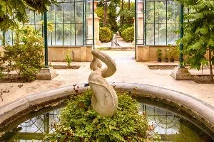
Medium
REINCANTAMENTO Episode 2. Technic and Magic, part two
second episode dedicated to Federico Campagna’s metaphysics, the core of our meditation
-
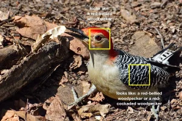
Medium
REINCANTAMENTO Episode 1. Technic and Magic, part one
first episode dedicated to Federico Campagna’s metaphysics, the core of our meditation
-
Medium
REINCANTAMENTO Episode 0. How did we get here?
the first, personal introduction to REINCANTAMENTO